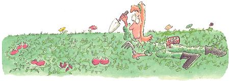

My war on the weeds.
Tossing my trowel, cultivator and weeder to the ground, I don gloves and survey the job before me. Out in the berry patch, I spot crabgrass bearing down on desperate runners sprung forth in hopes of escape. Nearby, knapweed masquerades as tomato plants and clover creeps through the coriander and lemon basil, hugging the soil like a soldier preparing for an ambush.
Triaging the damage like a medic on a battlefield I head toward the stricken strawberries. The berries seem to be turning blue - a result, no doubt, of being strangled. Pulling up the crabgrass proves futile, like trying to pull toilet paper from the stingy contraptions in certain public restrooms. I receive some satisfaction shredding the stubborn weed roots with the cultivator until I realize the extent of the entrenchment. It is like an intricate, underground vascular system with arteries, veins and hair-like capillaries. I resort to biological warfare and douse the enemy with a chemical in a bottle that has a skull and crossbones on it warning of injury, deformation or possibly even death if you so much as think about it.
Having survived the exposure, I assume an attitude of conviction and march up to the knapweed in what I hope appears to be a commanding and intimidating manner. They stand there innocently, and one actually extends a purple-flowered peace offering. Appearances are deceiving. The laid-back weed has such a firm hold I could easily believe that it had found a way to cement itself into the ground. In my exasperation I grab hold with both hands, pull for all I'm worth, and wind up on my rear end holding the upper portion of the plant with the purple flower intact. I could swear that I hear snickering, but when I look over at the flowerless fiend and its buddies they are silent and sinless, just trying to get by in this world like everybody else. I decide to return later to deal with the deadbeats; fantasies about the propane blowtorch in the garage flit through my consciousness. I only wish I knew how to use it.
Moving on to the clover, I find myself actually admiring the delicate leaves and their tri-leaf patterns. This weed doesn't seem so bad and I feel a twinge of empathy. I recall days in my childhood searching for and never finding the elusive four-leafed treasure that would bring luck and grant wishes. I also feel somewhat guilty for the double standard I magnanimously employ - the clover flourishes in the front yard, where it mingles with the prim-and-proper grass blades and passes for a lush lawn. Upon closer inspection, however, there is something mildly menacing how this leguminous weed is surrounding and closing in on the nervous-looking herbs.
Halfheartedly I get down on my knees. I am grateful that the clover doesn't seem to put up too much of a struggle as I rip the tiny tendrils from their root beds. But the beds stay in place and I know that this is not a good sign. I remove my gloves and feel my way to the firm mattresses complete with springy coils. They are perfectly happy where they are and have all but hung out a "do not disturb" sign on the doorknob. Undaunted and firm in my resolve to complete this task, I manually grab and manipulate the mass, jiggling it free. Feeling it give and lifting out the handful of roots, I understand that I have just reached into an organic circuit box and pulled out a handful of living wires. Somehow when I wasn't looking, lonely clovers of the world organized themselves and developed a complicated and intricate support system as vast, perhaps, as the World Wide Web.
I am done for the day, having surrendered to the dark side of Mother Nature's force. While vowing to return better-equipped, I feel somewhat shamed and humbled with a grudging respect for the scrappy invadersin my yard. I wonder at their innovative tenacity and single-minded determination to survive and thrive.
I decide that perhaps the price of storebought produce isn't so high after all.
|
|
 |
|